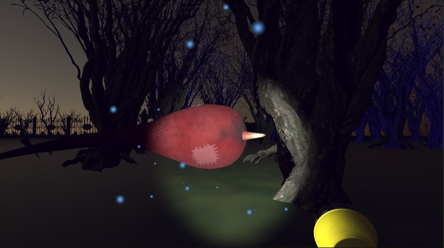
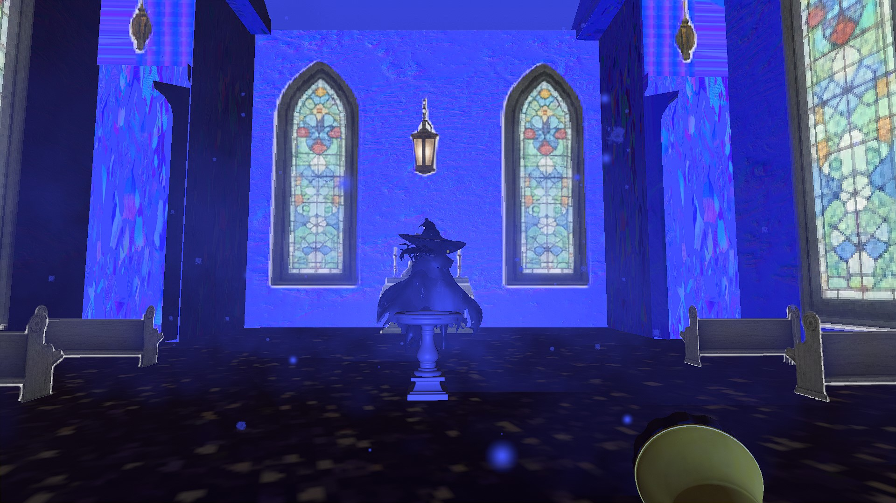
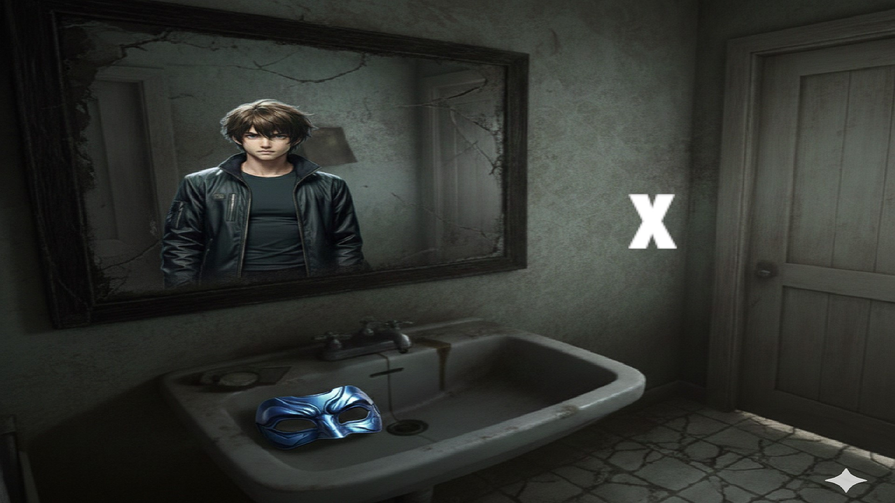

Atrapado en un cementerio maldito, deberás usar la máscara de tu hermano para ver el mundo espiritual. Un proyecto de Terror Psicológico desarrollado en Unity 3D para la Global Game Jam. Explora la delgada línea entre la realidad y lo Espiritual.
Ver en Itch.io

